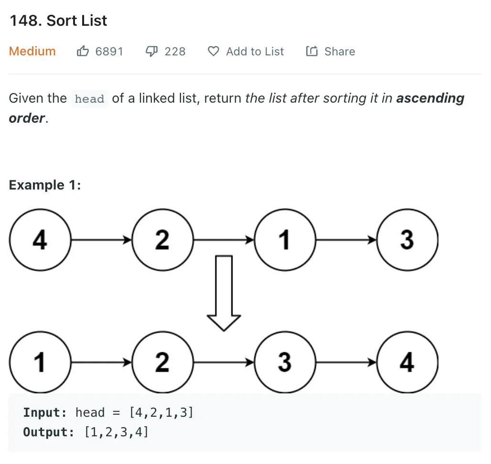
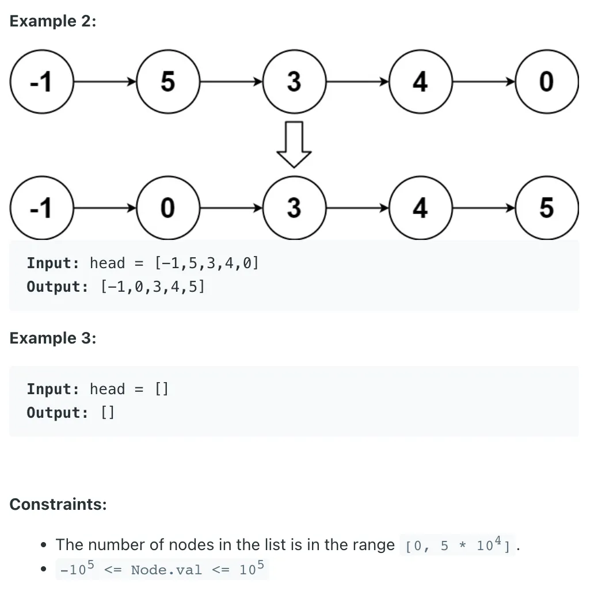

148. Sort List
考過的公司：Asked by: Bytedance
Question


先自己想想看 🤔Try it yourself first 🤔
✍🏽 My Solution - merge sort
class Solution {
public ListNode sortList(ListNode head) {
return mergeSortList(head);
}
private ListNode mergeSortList(ListNode head) {
if (head == null || head.next == null) {
return head;
}
// step 1. cut the list to two halves
ListNode mid = findMidNode(head);
ListNode rightHead = mid.next;
mid.next = null; // 兩個鏈表斷開
// step 2. sort each half
ListNode left = mergeSortList(head);
ListNode right = mergeSortList(rightHead);
// step 3. merge l1 and l2
return mergeList(left, right);
}
// 找到链表中间节点（876. 链表的中间结点）
private ListNode findMidNode(ListNode head) {
ListNode fast = head;
ListNode slow = head;
while (fast.next != null && fast.next.next != null) {
slow = slow.next;
fast = fast.next.next;
}
return slow;
}
private ListNode mergeList(ListNode l1, ListNode l2) {
ListNode dummy = new ListNode(-1);
ListNode tail = dummy;
while (l1 != null && l2 != null) {
if (l1.val < l2.val) {
tail.next = l1;
tail = tail.next;
l1 = l1.next;
} else {
tail.next = l2;
tail = tail.next;
l2 = l2.next;
}
}
if (l1 != null) tail.next = l1;
if (l2 != null) tail.next = l2;
return dummy.next;
}
}
🧠 Thought Process
- Why did I choose this particular implementation?
- 基本上抄了之前王爭遞歸寫法
- 快慢指針會這樣寫判斷條件 fast.next != null && fast.next.next != null 是因為想当节点个数是偶数的时候，让
slow刚好指向前边一半节点的最后一个节点，也就是下边的状态。//记住这个判断条件，偶数结点会找靠左结点，奇数就是中间节点，能用到很多题上
- What is the time/space complexity of my solution? How do I know?
- time O(n logn)
- space O(log(n))
- What mistakes did I make?
- 快慢指針寫錯
- if (head == null || head.next == null) return head; 這個會漏掉後面的判斷~~~!!!!!!!!! 而且是要return head
Solution #1 [王爭-遞歸]
Runtime: 5 ms, faster than 99.44% of Java online submissions for Sort List. Memory Usage: 49.9 MB, less than 91.42% of Java online submissions for Sort List.
class Solution {
public ListNode sortList(ListNode head) {
return mergeSortList(head);
}
private ListNode mergeSortList(ListNode head) {
if (head == null || head.next == null) return head;
ListNode midNode = findMidNode(head);
ListNode nextNode = midNode.next;
midNode.next = null; // 將兩個鏈表斷開
ListNode leftHead = mergeSortList(head);
ListNode rightHead = mergeSortList(nextNode);
return mergeList(leftHead, rightHead); // 合併兩個鏈表
}
private ListNode findMidNode(ListNode head) {
ListNode slow = head;
ListNode fast = head;
while (fast.next != null && fast.next.next != null) {
slow = slow.next;
fast = fast.next.next;
}
return slow;
}
private ListNode mergeList(ListNode headA, ListNode headB) {
ListNode pa = headA;
ListNode pb = headB;
ListNode newHead = new ListNode();
ListNode tail = newHead;
while (pa != null && pb != null) {
if (pa.val < pb.val) {
tail.next = pa;
tail = pa;
pa = pa.next;
} else {
tail.next = pb;
tail = pb;
pb = pb.next;
}
}
if (pa != null) {
tail.next = pa;
}
if (pb != null) {
tail.next = pb;
}
return newHead.next;
}
}
Explanation (in my words)
- How does their solution work?
- 使用 MergeSort (QuickSort也是可以)，只是這個比較好寫
- 找到中間點，遞的時候一直把鏈表分割到剩下一個節點
- 歸的時候，合併
-
What is the space/time complexity of their solution?
-
time: O(n logn)
-
遞推公式
T(n) = T(n/2) + T(n/2) + 2n = 2T(n/2)+2n = O( 2n logn) = O( n logn)
T(n/2)：mergeSortList(head);
T(n/2)：mergeSortList(head);
2n：要遍歷鏈表找中間節點 + 合併兩個鏈表 = n + n
-
-
space: O(logn)
-
O(logn)：只需花費遞歸函數調用棧的空間
跟陣列不同，不用申請一個 tmp 數組合併，所以合併兩個鏈表得時候是O(1)
-
-
Solution #2 [王爭-Iterative follow up：space O(1) ]
Explanation (in my words)
- How does their solution work?
- 改成迭代的方式，由下而上直接合併，省去壓棧的空間
Solution #3 [QuickSort] [要掌握]